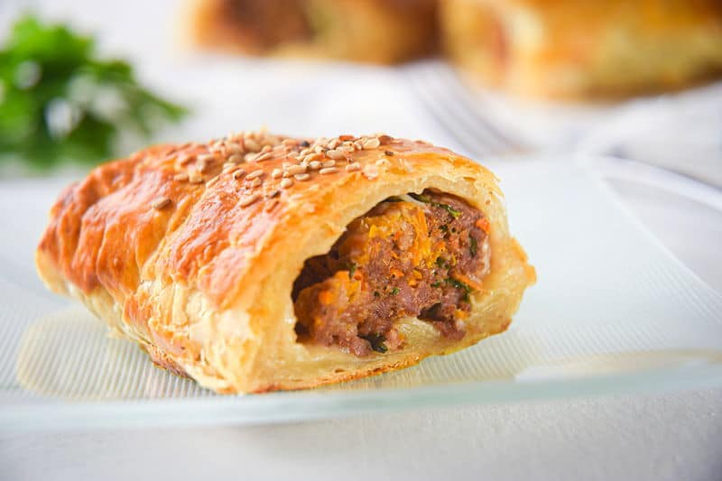

Sausage Rolls

Seasoned beef wrapped in puff pastry
This Scottish recipe belongs to my Grandmother. It is simple, quick and keeps
well as left overs. Made with ground beef and famous A1 steak sauce, be
sure to leave the bottle out for dipping! Serve with mashed potatos and
brussel sprouts.
Ingredients
- 1 lb ground beef
- 1 egg
- 1 small onion, chopped
- 1 1/2 tbsp steak sauce
- 1/4 cup bread crumbs
- 1/2 pkg frozen puff pastry
Directions
- Preheat oven at 400 F.
- Roll out puff pastry dough, then cut in 2-inch x 3-inch rectangles.
- Combine all ingredients in a large bowl.
- Wrap puff pastry sheet around a small handful of meat.
- Optional: Brush each roll with an egg wash.
- Place on baking tray with parchment paper and cook for 20 minutes.